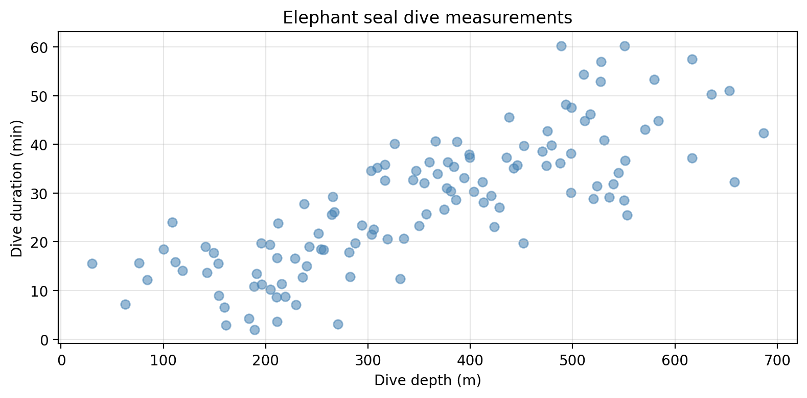
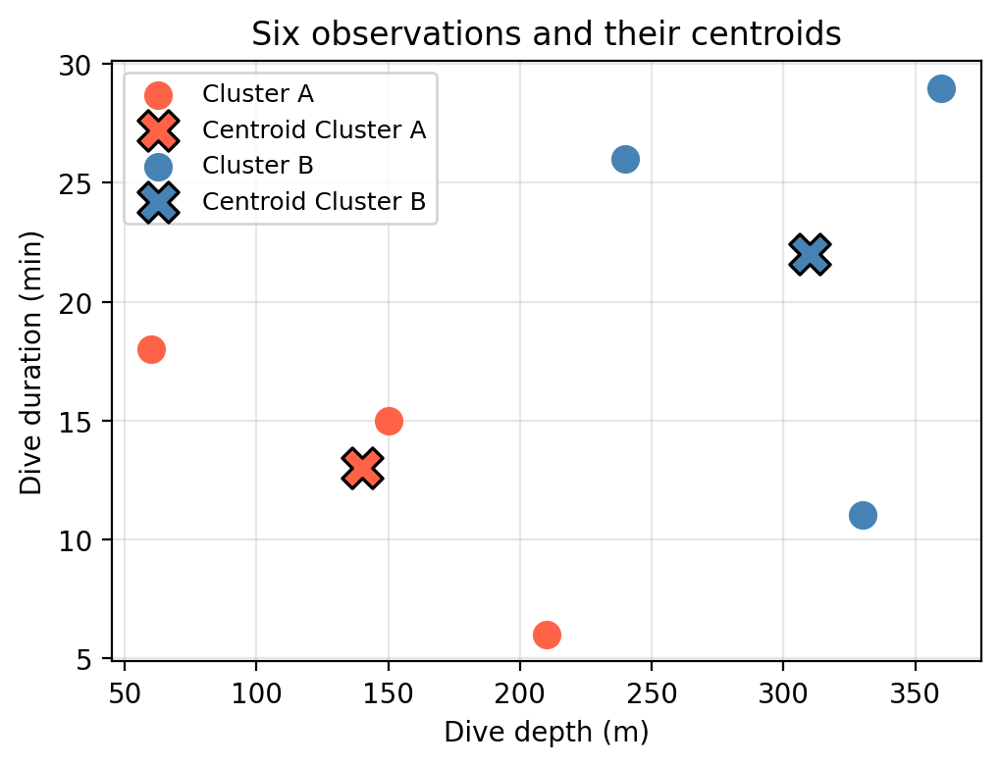
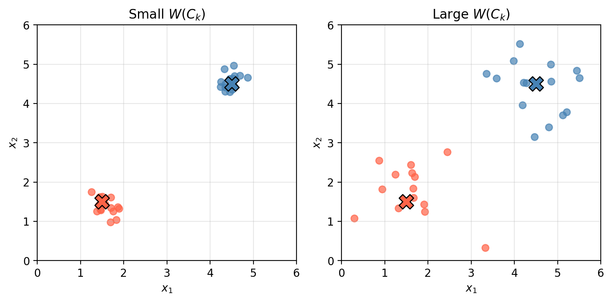
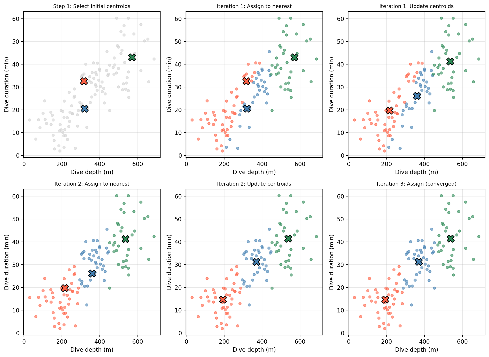
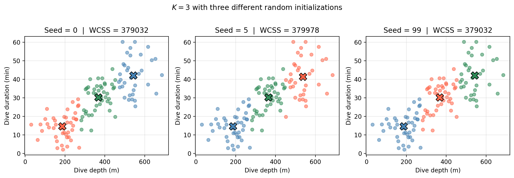
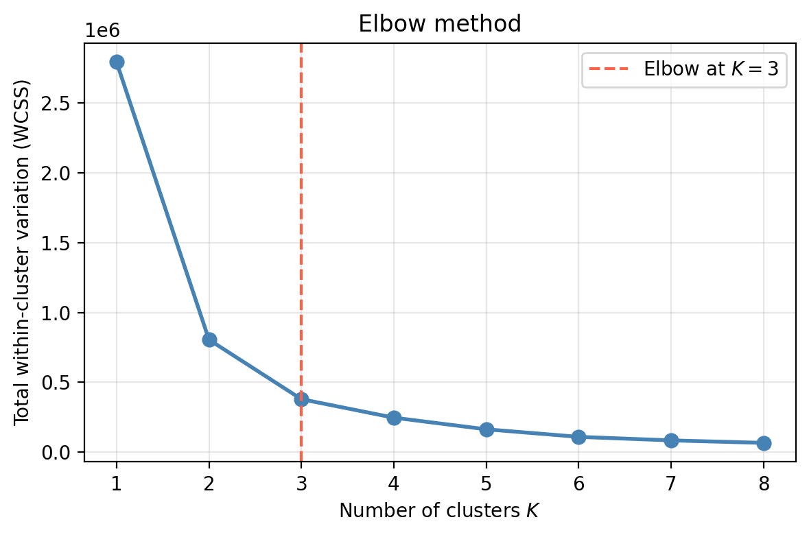

K-Means Clustering
Clustering is a broad set of techniques for finding subgroups, or clusters, in a dataset. The goal is for observations within a cluster to be as similar to each other as possible, while observations in different clusters are as different as possible.
In this lesson we introduce:
- Clustering as an unsupervised method for finding subgroups in data
- The concept of a centroid and within-cluster variation
- The \(K\)-means algorithm and how it minimizes within-cluster variation iteratively
- Practical considerations: local optima, choosing \(K\), and interpreting results
These notes are based on chapter 12.4 of An Introduction to Statistical Learning with Applications in Python (James et al. 2023). The example data is synthetic and was generated with the aid of Claude Code for the purpose of this lesson. The clustering illustrations in the slides were made by Dr. Allison Horst.
A guiding example: investigating elephant seal diving strategies
Consider Amanda form our first lesson in this course. She is a marine ecologist who records dive depth (meters) and dive duration (minutes) for a large number of northern elephant seals. She has no prior labels — she simply wants to ask: are there distinct foraging strategies among these seals?
Unlike the classification problems we have studied, there is no response variable \(Y\) here: no prior labels, no “correct answer.” Clustering is a type of unsupervised method because we are discovering structure within the data rather than predicting a known outcome. PCA is another unsupervised method we have studied: it finds a low-dimensional representation of the observations that explains a large fraction of the variance.
The algorithm
What is a centroid?
Before jumping into the \(K\)-means algorithm, we need to understand what a centroid is. A centroid is the average position of a set of points, the “center of mass” of the group.
Suppose Amanda takes a small subset of six observations and tentatively groups them into two clusters:
| Obs. | Depth \(x_1\) (m) | Duration \(x_2\) (min) | Cluster |
|---|---|---|---|
| 1 | 60 | 18 | A |
| 2 | 210 | 6 | A |
| 3 | 150 | 15 | A |
| 4 | 240 | 26 | B |
| 5 | 330 | 11 | B |
| 6 | 360 | 29 | B |
The centroid of cluster A is the mean across its observations:
\[\bar{x}^{(A)} = \left(\frac{60 + 210 + 150}{3},\; \frac{18 + 6 + 15}{3}\right) = (140,\; 13)\]
And for cluster B:
\[\bar{x}^{(B)} = \left(\frac{240 + 330 + 360}{3},\; \frac{26 + 11 + 29}{3}\right) = (310,\; 22)\]

Measuring within-cluster variation
For a clustering to be good, the observations within each cluster should be as similar to each other as possible. We measure this with within-cluster variation.
For the \(k\)-th cluster \(C_k\), within-cluster variation is the average pairwise squared Euclidean distance between all observations in the cluster:
\[W(C_k) = \frac{1}{|C_k|} \sum_{i,\, i' \in C_k} \;\sum_{j=1}^{p} (x_{ij} - x_{i'j})^2,\]
where \(|C_k|\) is the number of observations in cluster \(C_k\) and \(p\) is the number of features. Clusters with small within-cluster variation \(W(C_k)\) have tightly packed observations; clusters with large within-cluster variation \(W(C_k)\) have scattered ones.

The overall objective is to find \(K\) clusters that minimize the total within-cluster variation across all clusters:
\[\underset{C_1, \ldots, C_K}{\text{minimize}} \left\{ \sum_{k=1}^{K} W(C_k) \right\}.\]
The algorithm
The \(K\)-means algorithm finds an approximate solution to this minimization through a simple iterative procedure:
- Initialize: randomly select \(K\) observations from the dataset as the initial centroids.
- Assign: assign each observation to the cluster whose centroid is nearest (smallest Euclidean distance).
- Update centroids: compute the new centroid (mean) of each cluster.
- Repeat steps 2–3 until assignments no longer change.
Every iteration is guaranteed to decrease (or maintain) the total within-cluster variation, so the algorithm always converges. However, it does not always converge to the global minimum — see Local optima below.
See slides for a step-by-step visual walkthrough of the algorithm.
The figure below traces the first few iterations on the elephant seal dataset, starting from one random initialization:

Considerations
Local optima
Because the initial cluster assignments in step 1 are random, different starting points can lead to different final clusterings. The algorithm finds a local minimum of the objective, not necessarily the global one.
The three panels below show what can happen when the same dataset is clustered with \(K = 3\) but different random initializations:

To reduce the chance of converging to a poor local minimum, it is standard practice to run \(K\)-means many times with different random initializations and keep the solution with the lowest total within-cluster variation. The sklearn parameter n_init controls how many restarts are performed (default: 10).
More generally, clustering methods are not very robust to perturbations in the data.
How to choose \(K\)
\(K\) is a hyperparameter we must choose before running the algorithm. One common approach is the elbow method: fit \(K\)-means for a range of \(K\) values and plot the total within-cluster variation (WCSS) against \(K\). The total variation will always decrease as \(K\) increases, but the gains become smaller after the “true” number of clusters is reached. The elbow in the curve, where the rate of decrease flattens, suggests a reasonable value of \(K\).

The elbow at \(K = 3\) suggests three foraging strategies is a sensible grouping. Note that the elbow can sometimes be ambiguous. Choosing \(K\) also depends on what is practically meaningful or interpretable in the applied context.
Additionally, we may look for the number of clusters that provides the most useful or actionable solution for the scientific question at hand.
Interpreting results
Clusters will always be found: the algorithm is designed to partition observations regardless of whether true subgroups exist. Clustering with different parameter choices —different \(K\), different initializations— will produce variable results. The output should not be taken as absolute truth about the dataset, but rather as a starting point for generating hypotheses and guiding further study.
In Amanda’s case, the clusters may well correspond to real foraging strategies, but they could also reflect individual variation, seasonal patterns, or artifacts of data collection. The clusters are an invitation to investigate further, not a definitive answer!
References
James, Gareth, Daniela Witten, Trevor Hastie, Robert Tibshirani, and Jonathan E. Taylor. 2023. An Introduction to Statistical Learning: With Applications in Python. Springer Texts in Statistics. Cham: Springer.